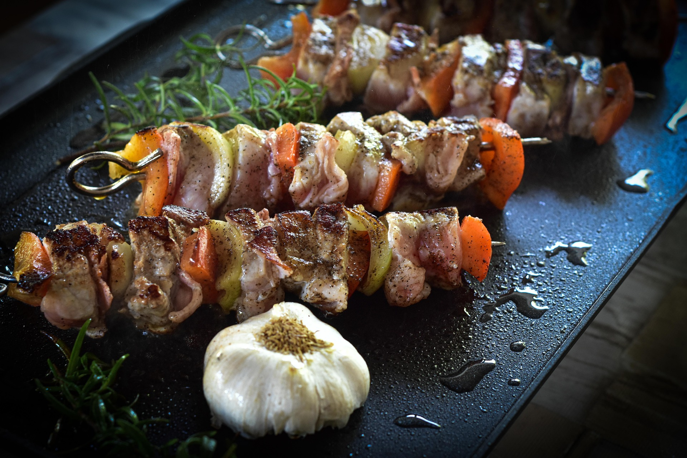

高校最後の夏休みは、実に充実したものでした。私は進路が既に決まっているので、ゆっくりできて良かったです。
この夏休みで一番大きな思い出といえば、東京でオフ会をしたことでしょう。
ネットで出会った趣味が同じ人たちと集まって、カラオケに行ったりビアガーデンでご飯を食べたりしました。
今までした経験の無いことだったので、とても新鮮で楽しかった記憶があります。
機会があれば、また出来ると良いと思います。

趣味のTRPGもたくさんしました。
TRPGはテーブルトークロールプレイングゲームとも呼ばれ、サイコロを振って行動を決める人生ゲームのような遊びです。
特に印象に残っているのは、クトゥルフ神話TRPGというシステムのGODARCAというシナリオです。